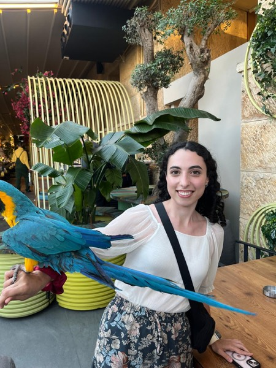
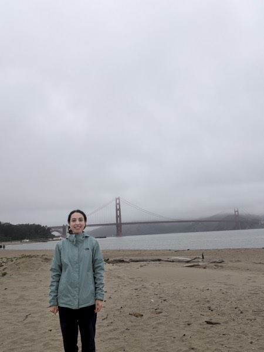
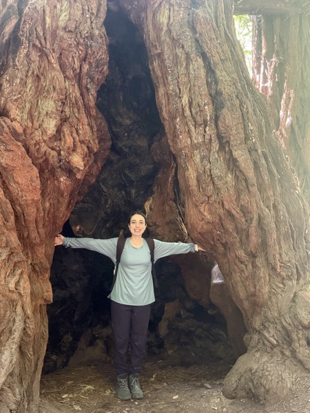
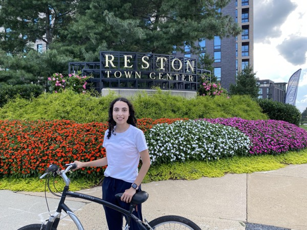

Misc




Outside of Research
When I'm not working, I love staying active and being outdoors: working out, hiking, biking, walking, and exploring new places. I also enjoy arts and crafts.




When I'm not working, I love staying active and being outdoors: working out, hiking, biking, walking, and exploring new places. I also enjoy arts and crafts.